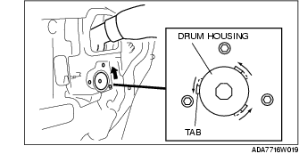

Rear power window regulator removal/installation
1. Disconnect the negative battery cable.
2. Remove the rear door glass.
3. Remove the rear door speaker.
4. Remove the rear power window motor.
5. Remove the nuts.

6. Insert hand through the service hole, rotate the regulator drum housing in the direction shown in the figure and disengage the regulator drum housing from the rear door unit connection tabs.

7. Remove the rear power window regulator from the rear speaker installation hole.

8. Install in the reverse order of removal.